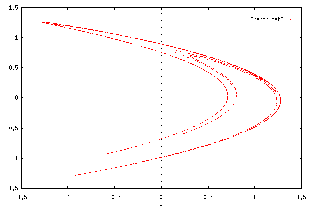
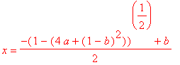
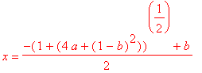
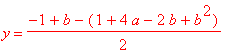
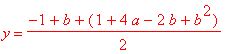

xn+1=
1 - axn2 +
bxn,
(a
and b are parameters)
BACKGROUND
Michel Henon,
an astronomer at the observatory in Nice, France, was born in Paris in
1931. Curious about the degradation of celestial orbits, he began
to model the orbits of stars around the centers of their galaxies.
Henon considered
gravitational centers as a three dimensional object (as opposed to a point
in space) and carefully studied the orbits of the stars. To simplify
the task of trying to track a three dimensional orbit, he considered, instead,
the intersection of a plane with these orbits. Initially, the intersection
points appeared to be completely random in their location, moving from
one edge of the plane to the next. However, after a few dozen points
were plotted, a closed, egg-shaped curve began to appear. This mapping
was, apparently, the cross section of a torus (i.e., a doughnut).
Henon (along
with one of his graduate students) continued to study this mapping and
continued plotting the points for a system with increased energy levels.
Once the newer mappings were made, though, the continuous curve began fading
and random points began to appear proportionally to the energy. Over
the years, Henon tried many ways to predict the upcoming points of his
high-energy graph until finally, he decided to abandon classical methods
and use difference equations.
Applying a formula
to force the data into the shape of a crescent moon, Henon found some interesting
results. The formula was fairly simple. Take the old y
and multiply it by 0.3 (b).
Then subtract 1.4 (a)
times the old x
squared. Finally add one to the whole equation. This
yields this system:
xnew=
y - 1.4x2 + 1
ynew= 0.3x
The result was
the following picture:

Although, at
first, it seems like an ordinary curve, closer inspection reveals distinct
curves, one thicker than the other. If we magnify the picture, we
see that each of these curves is also made up of two similar curves.
This happens for every possible magnification of the curve.
EQUILIBRIA
Henon's
equation has two equlibrium or fixed points for each x and y. (An
equilibrium point is a point where x n+1
= x n ) These are
as follows:




LINKS
The
Henon Map (as a difference equation)
Henon
Mappings
Bifurcation
Diagram for the Henon Map
There numerous webpages available with some interesting
information and pictures concerning Henon's equation. Here are a couple
of the nicer ones that we came across:
CLICK
HERE FOR SOME FANCY LOOKING FRACTAL PICTURES
CLICK HERE TO EXPERIMENT
WITH THE PARAMETERS A AND B
CLICK
HERE TO FIND SOME INFORMATION ABOUT HENON AND AN
EXHIBIT
REGARDING HIS WORK
Click
here to go to Home Page for Difference Equations at URI